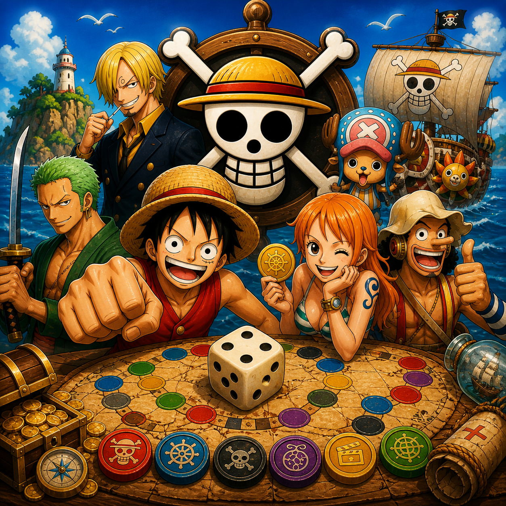

De 1 a 4 jugadores tiran el dado, avanzan por el tablero y responden preguntas. Hay 6 categorías. Para superar un nivel hay que conseguir las 6 medallas y acertar el reto final.
El juego tiene 8 niveles y 480 preguntas integradas. Las preguntas se eligen de forma aleatoria intentando no repetir durante la partida.
Tira el dado para empezar.